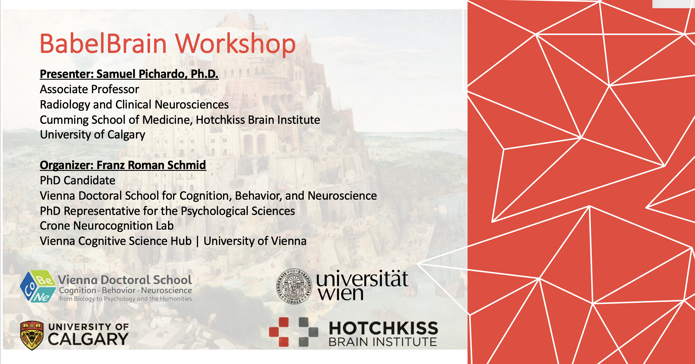

Presentations
This area will contain material and links to relevant presentation material
University of Vienna Workshop - 2026-04-07

This is a 2hr presentation on important aspects to consider when using BabelBrain in your research. Material (video recording, slides and syllabus) hosted at OSF:
If deciding to follow the exercises in the syllabus, consider using prerelease version of BabelBrain 0.8.1
Special thanks, and huge shoutout, for the organizer of the workshop, Franz Schmid, Ph.D. Candidate at the Crone Neurocognition Lab, Vienna Doctoral School for Cognition, Behavior, and Neuroscience, in the Faculty of Psychology of the University of Vienna.